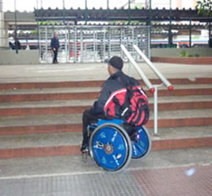

Trens do ABC não são acessíveis a deficientes físicos
Cadeirantes encontram dificuldades nas estações de trem do ABC – Foto: Rafael Noguera
As estações da CPTM (Companhia Paulista de Trens Metropolitanos) que atendem à região do ABC não oferecem acesso a quem possui deficiência física ou mobilidade reduzida.
O acesso do trem para fora das estações é feito por escadas. Usuários com dificuldades de locomoção ou cadeirantes precisam ser carregados por funcionários, seguranças ou até mesmo por passageiros presentes no local.
Os cadeirantes afirmam que o atendimento dos funcionários costuma demorar. “Tenho que ficar lá esperando um tempão. Têm boa vontade, mas não é uma coisa fácil, tem muita escadaria, a cadeira é pesada e é arriscado”, diz Tuca Munhoz, usuário do sistema e coordenador da ONG Instituto MID - Para a participação social das pessoas com deficiência. Ouça abaixo a reportagem completa.
O decreto nº 5.296, de 2 de dezembro de 2004, diz que “a frota de veículos de transporte coletivo ferroviário e a infraestrutura de seus serviços deverão estar totalmente acessíveis aos portadores de deficiência no prazo máximo de cento e vinte meses”.
A CPTM afirma que está respeitando a lei e que, até 2014, todas as estações estarão plenamente acessíveis. A empresa diz também que os funcionários são treinados para ajudar os portadores de necessidades especiais a terem acesso aos trens.
Fonte Metodista.